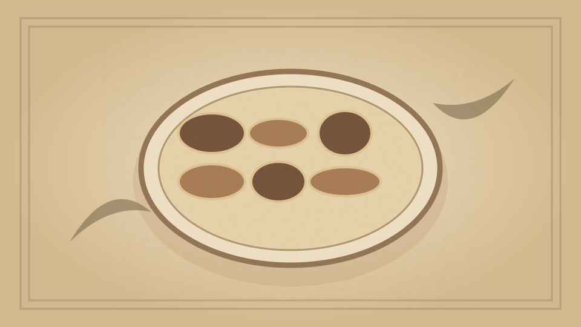

1910 · Fannie Merritt Farmer · FISH
Scalloped Lobster
The Boston Cooking-School Cook Book

Historical Recipe
The following text is extracted from the 1910 edition, retaining historical terminology and quantities.
Original Ingredients & Directions
2 lb. lobster
1½ cups White Sauce II
½ teaspoon salt
Few grains cayenne
2 teaspoons lemon juice
Remove lobster meat from shell and cut in cubes. Heat in White Sauce and add seasonings. Refill lobster shells, cover with buttered crumbs, and bake until crumbs are brown. To prevent lobster shells from curling over lobster while baking, insert small wooden skewers of sufficient length to keep shell in its original shape. To assist in preserving color of shell, brush over with olive oil before putting into oven. Scalloped lobster may be baked in buttered scallop shells, or in a buttered baking-dish.
Automatically extracted transcription; editorial verification pending. Historical instructions may not meet modern food-safety standards.